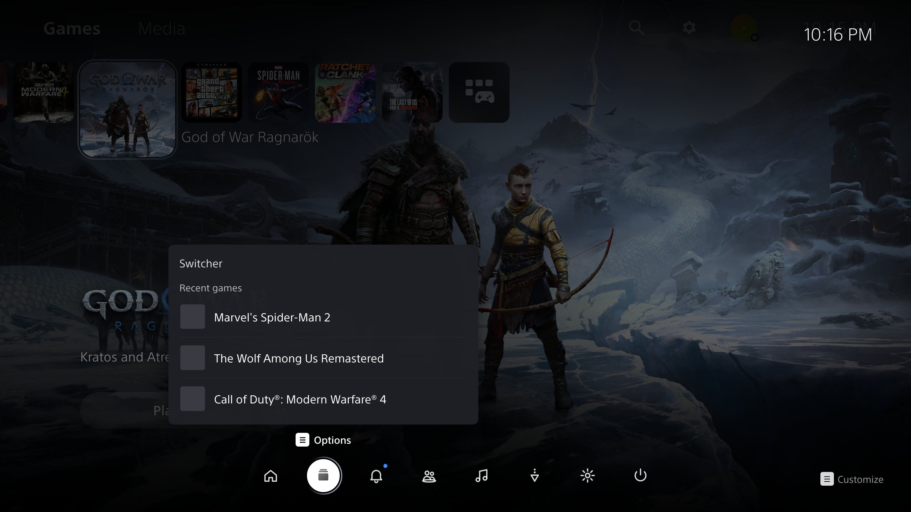
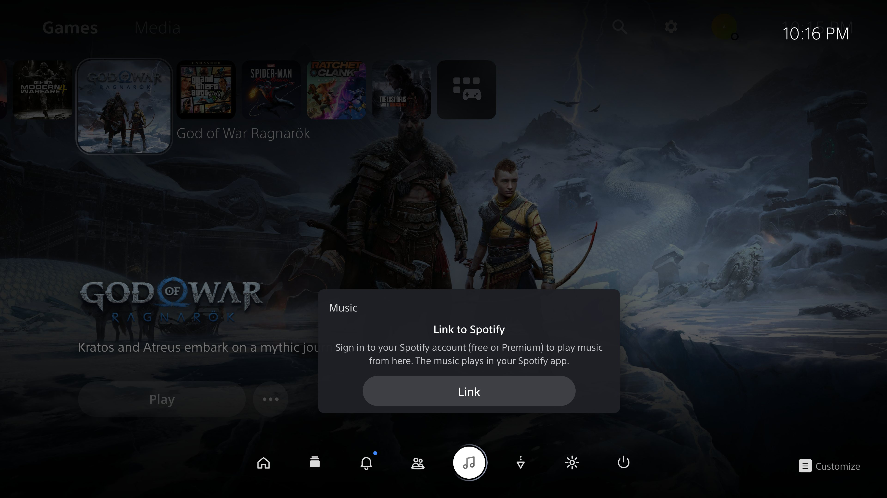

Controller overlay
One button, over any game.
Press the Home button on your controller while you play. The Control Center opens on top of the game, and closes the same way.

Switch games without leaving.
The Switcher lists your recent games. Pick one and you're there.

Notifications, your way.
Read what you missed, clear it, or switch on Do Not Disturb while you play.
Friends and music.
See friends who played with you on Steam, and link Spotify to play your music while you game.

Make your PC feel like a console.
Free for Windows 10 and 11. Works with Steam, Epic Games and any game on your PC.
Download Game Launcher